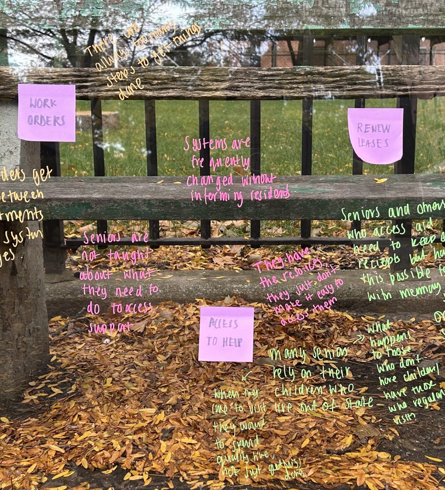
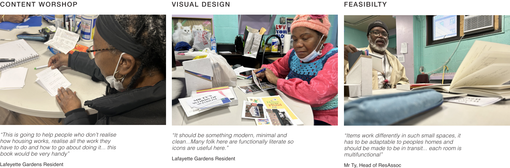
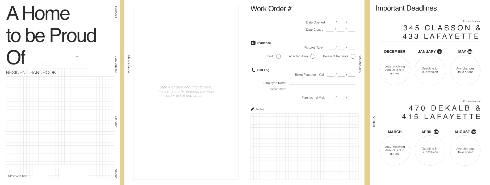
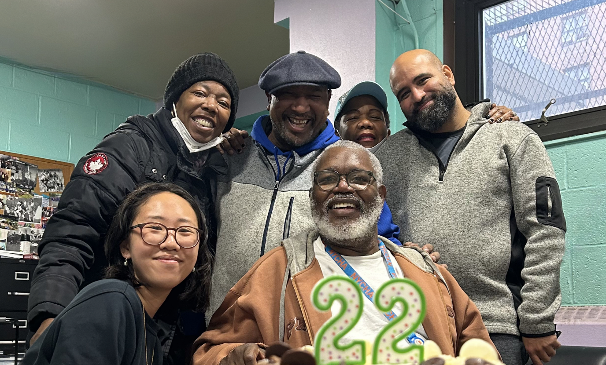

Increasing Access to Resources in Social Housing Developments
Lafayette Gardens is a community-led project within a social housing development in Brooklyn, New York. "A home to be proud of" was created as a logbook and guide to help residents better access resources available to them. Created by the residents, for the residents.
Lafayette Gardens is a residential complex in Brooklyn with a large aging population of 384. With the help of Mr Ty, the head of the residents association, I started exploring and integrating myself into the community to better understand their needs.

Three official co-design workshops were held with distinct themes. To prepare for each workshop, a clear but flexible agenda was set and example ideas were created to help with creativity. Food and drinks were provided.


The Lafayette Gardens logbook has been handed over and is currently under production to be given to over 800 residents, more than 350 of which are seniors.
